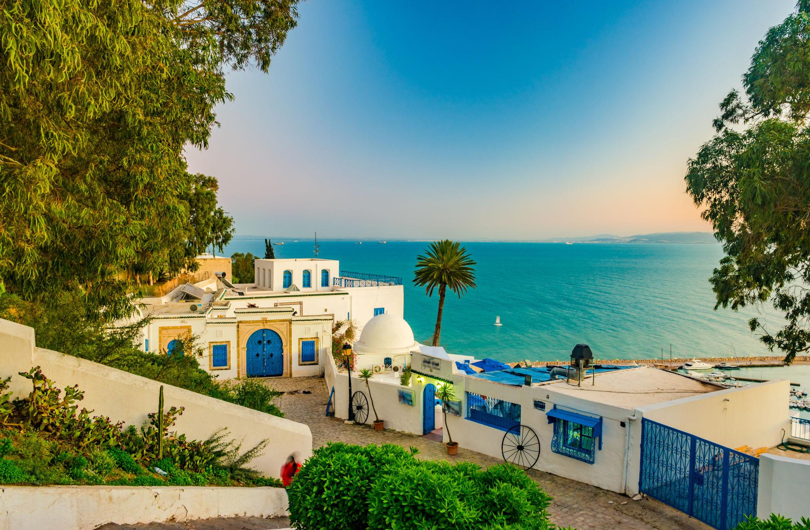
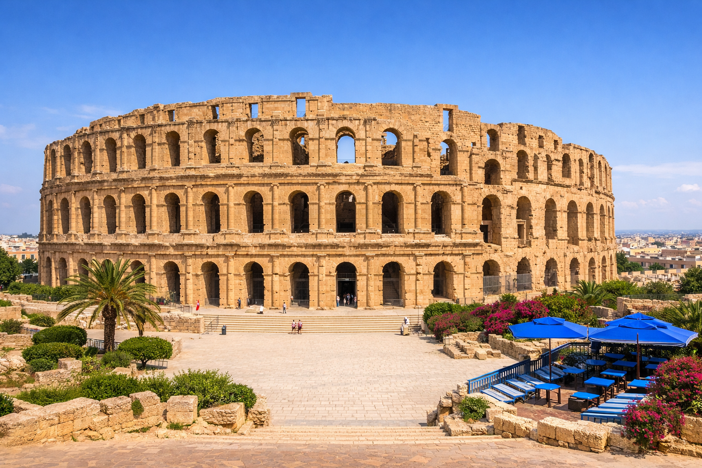
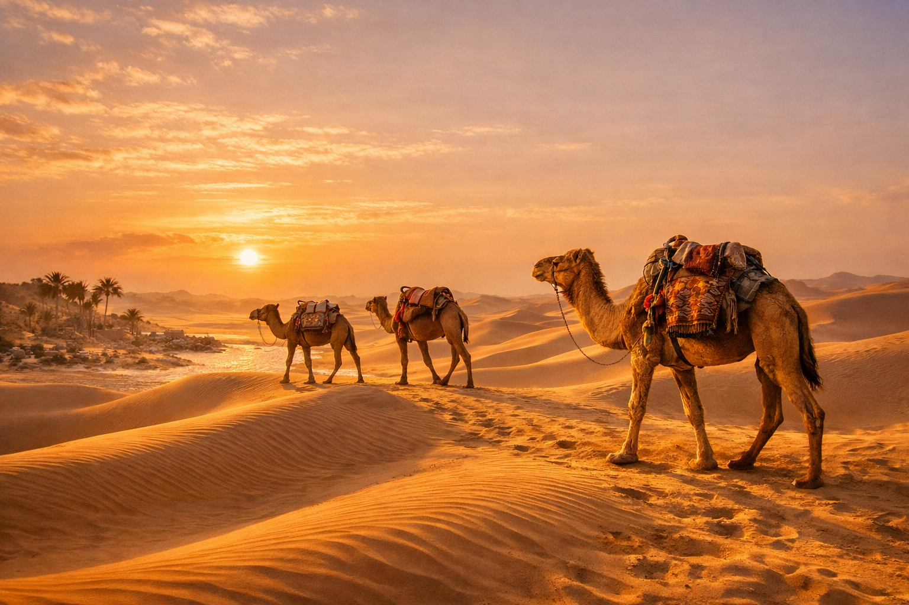
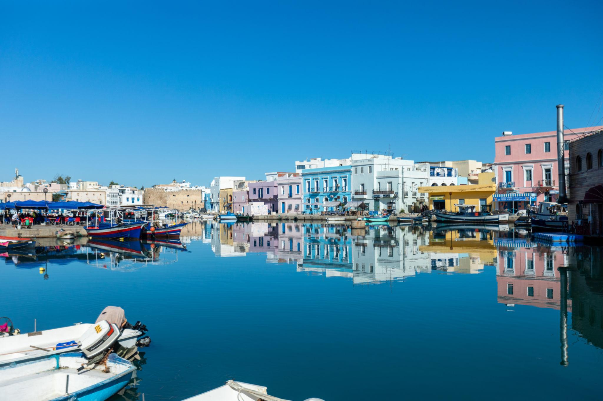
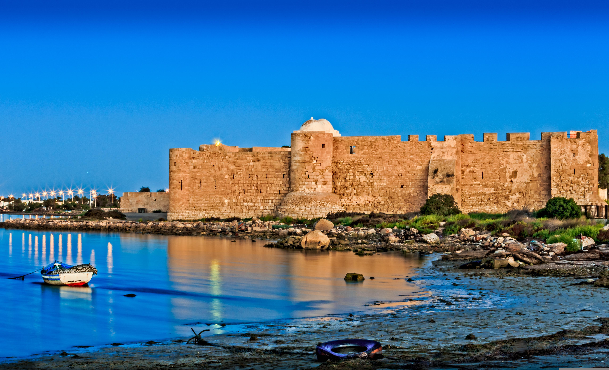
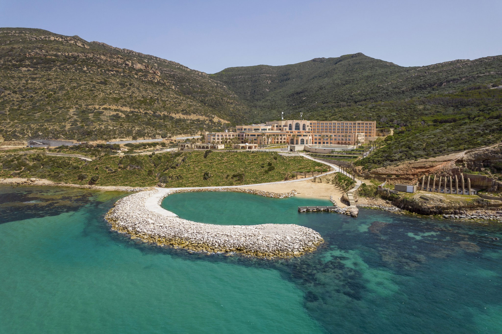
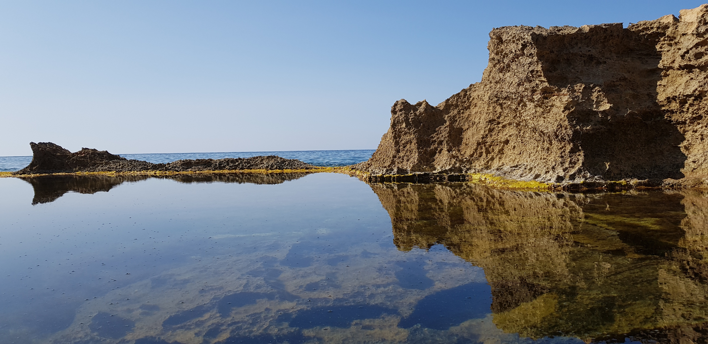

Sidi Bou Said
A magical cliffside village of blue doors and white walls overlooking the Mediterranean. One of Tunisia's most iconic and photogenic spots.
- Location: Tunis Area
- Best Time: April – October
- Known For: Blue & white architecture, sea views

Carthage
Walk through the ruins of one of the ancient world's greatest civilisations. A UNESCO World Heritage Site overlooking the Gulf of Tunis.
- Location: Tunis Area
- Best Time: March – May, Sept – Nov
- Known For: Roman ruins, ancient history

El Jem Amphitheatre
One of the best-preserved Roman amphitheatres in the world. Seats 35,000 people and rivals the Colosseum in Rome.
- Location: Central Tunisia
- Best Time: March – June
- Known For: Roman architecture, history

Douz & The Sahara
The gateway to the Sahara Desert. Ride camels at sunset, sleep under a billion stars, and experience the magic of the world's greatest desert.
- Location: South Tunisia
- Best Time: October – March
- Known For: Camel rides, dunes, stargazing

Kairouan Mosque
One of the oldest mosques in the Islamic world. A masterpiece of early Islamic architecture dating back to 670 AD.
- Location: Central Tunisia
- Best Time: All year round
- Known For: Islamic heritage, architecture

Bizerte Port
A charming port city with colourful boats and a beautiful old medina. Tunisia's most northerly city — an underrated gem.
- Location: North Tunisia
- Best Time: May – September
- Known For: Old port, medina, beaches

Djerba
Tunisia's largest island, famous for turquoise sea and rich heritage. A paradise for beach lovers and culture seekers.
- Location: South Coast
- Best Time: April – October
- Known For: Beaches, heritage, island life

Korbus
A hidden village with natural hot springs that flow into the sea. A unique relaxing experience on the Cap Bon peninsula.
- Location: Cap Bon
- Best Time: October – April
- Known For: Natural hot springs, sea views

Sousse
A vibrant coastal city with a UNESCO-listed medina and beautiful beaches. Known as the "Pearl of the Sahel".
- Location: East Coast
- Best Time: May – October
- Known For: Medina, beaches, nightlife